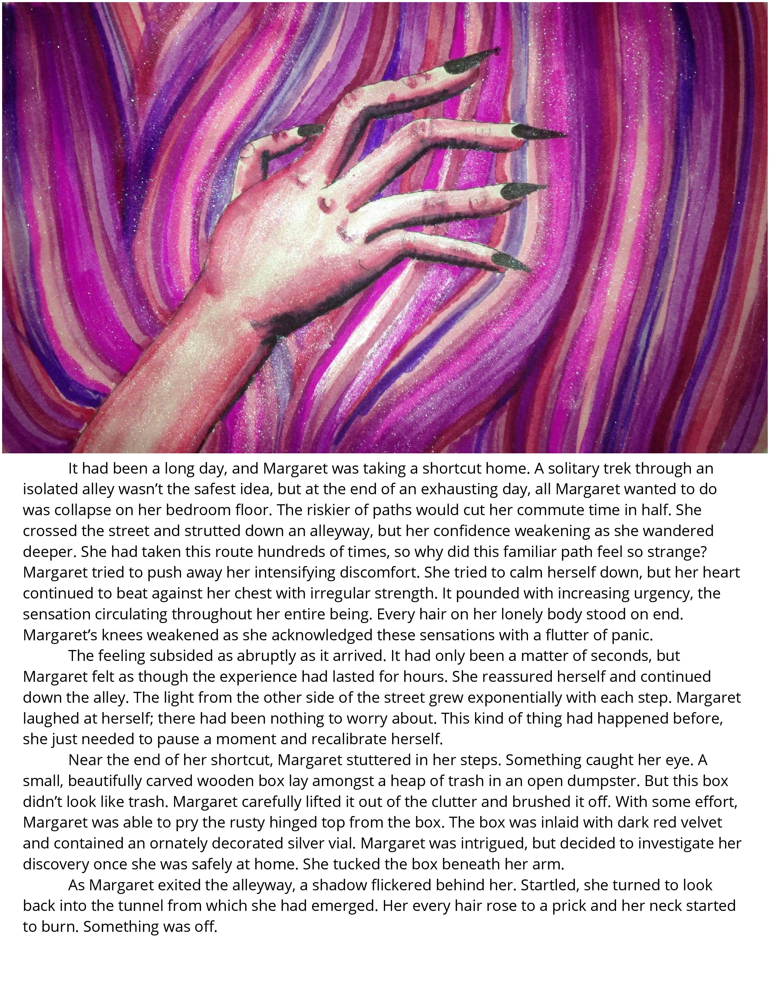
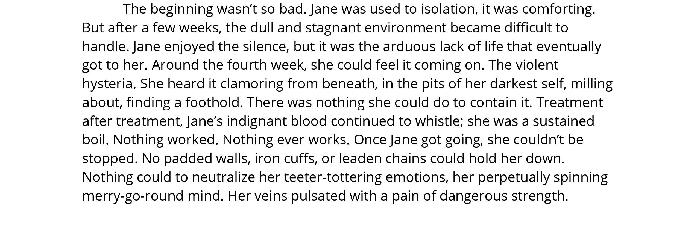

Spies | Tea Kettle
Katie Adams
Spies
Tea Kettle
Katie Adams is 14 years old. She was born in Austin, TX. Katie hates a lot of things, but enjoys art, music and animals. She spends the majority of her time making music, hiding out in her room, and drawing. Her spirit animal is probably a wolf or something.